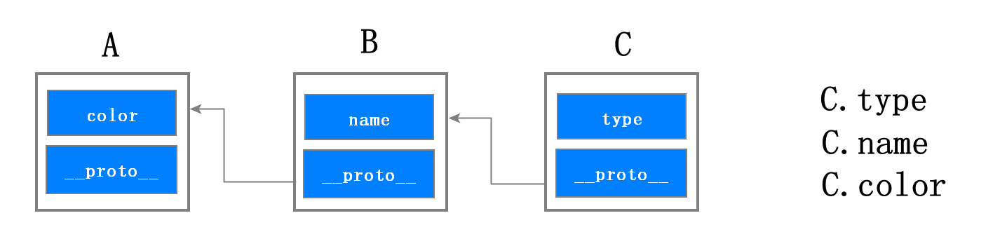

1. 继承是什么？
- 继承就是一个对象可以访问另外一个对象中的属性和方法
2. 继承的目的？
- 继承的目的就是实现原来设计与代码的重用
3. 继承的方式
- java、c++等：class
- **javaScript： 原型链 ** ES2015/ES6 中引入了 class 关键字，但那只是语法糖，JavaScript 的继承依然和基于类的继承没有一点关系
4. 原型与原型链
JavaScript 只有一种结构：对象。
JavaScript 的每个对象都包含了一个隐藏属性__proto__，我们就把该隐藏属性 proto 称之为该对象的原型 (prototype)，proto 指向了内存中的另外一个对象，我们就把 proto 指向的对象称为该对象的原型，那么该对象就可以直接访问其原型对象的方法或者属性。

看到使用 C.name 和 C.color 时，给人的感觉属性 name 和 color 都是对象 C 本身的属性，但实际上这些属性都是位于原型对象上，我们把这个查找属性的路径称为原型链
每个实例对象（ object ）都有一个私有属性（称之为 proto ）指向它的构造函数的原型对象（prototype ）。该原型对象也有一个自己的原型对象( proto ) ，层层向上直到一个对象的原型对象为 null。根据定义，null 没有原型，并作为这个原型链中的最后一个环节。
总结：继承就是一个对象可以访问另外一个对象中的属性和方法，在JavaScript 中，我们通过原型和原型链的方式来实现了继承特性。
5. 继承的方式
5.1 构造函数如何创建对象
1 | function DogFactory(type, color) { |
创建实例的过程
1 | var dog = {}; |
观察上图，我们可以看到执行流程分为三步：
首先，创建了一个空白对象 dog；
然后，将 DogFactory 的 prototype 属性设置为 dog 的原型对象，这就是给 dog 对象设置原型对象的关键一步；
每个函数对象中都有一个公开的 prototype 属性，当你将这个函数作为构造函数来创建一个新的对象时，新创建对象的原型对象就指向了该函数的 prototype 属性，所以通过该构造函数创建的任何实例都可以通过原型链找到构造函数的prototype上的属性
最后，再使用 dog 来调用 DogFactory，这时候 DogFactory 函数中的 this 就指向了对象 dog，然后在 DogFactory 函数中，利用 this 对对象 dog 执行属性填充操作，最终就创建了对象 dog。
实例的proto属性 == 构造函数的proyotype
5.2 原型链继承
原理： 实现的本质是通过将子类的原型指向了父类的实例，
优点：
- 父类新增原型方法/原型属性，子类都能访问到
- 简单容易实现
缺点：
- 不能实现多重继承
- 来自原型对象的所有属性被所有实例共享
- 创建子类实例时，无法向父类构造函数传参
1 | //父类型 |
5.3 借用构造函数实现继承
原理：在子类型构造函数中通用call()调用父类型构造函数
特点：
- 解决了原型链继承中子类实例共享父类引用属性的问题
- 创建子类实例时，可以向父类传递参数
- 可以实现多重继承(call多个父类对象)
缺点：
- 实例并不是父类的实例，只是子类的实例
- 只能继承父类的实例属性和方法，不能继承父类原型属性和方法
- 无法实现函数复用，每个子类都有父类实例函数的副本，影响性能
1 | function Person(name, age) { |
5.4 原型链+借用构造函数的组合继承
原理：通过调用父类构造，继承父类的属性并保留传参的优点，然后通过将父类实例作为子类原型，实现函数复用。
优点：
- 可以继承实例属性/方法，也可以继承原型属性/方法
- 不存在引用属性共享问题
- 可传参
- 父类原型上的函数可复用
缺点：
- 调用了两次父类构造函数，生成了两份实例
1 | function Person(name, age) { |
5.5 ES6 class继承
原理：ES6中引入了class关键字，class可以通过extends关键字实现继承，还可以通过static关键字定义类的静态方法,这比 ES5 的通过修改原型链实现继承，要清晰和方便很多。
优点：
- 语法简单易懂,操作更方便
缺点：
- 并不是所有的浏览器都支持class关键字
1 | class Person { |